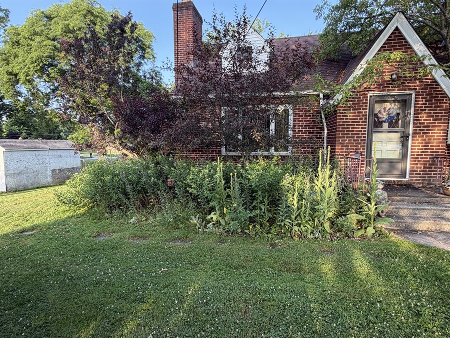
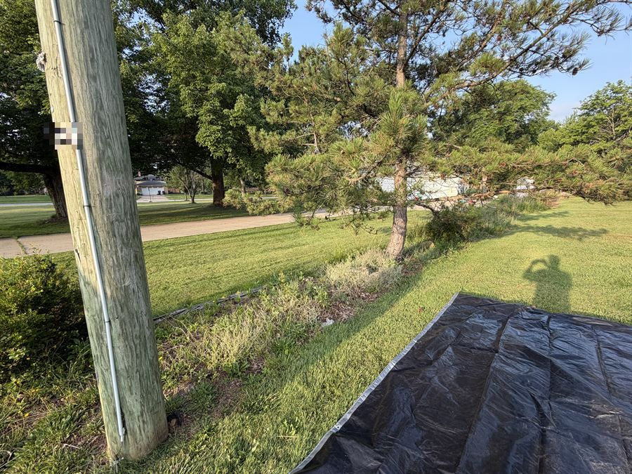
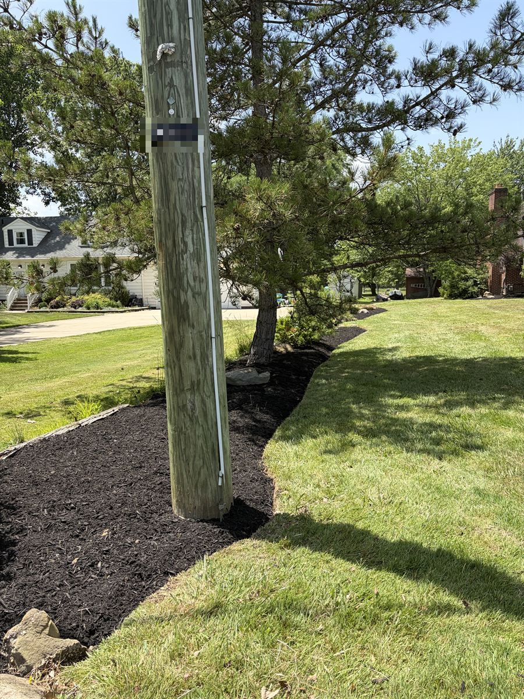
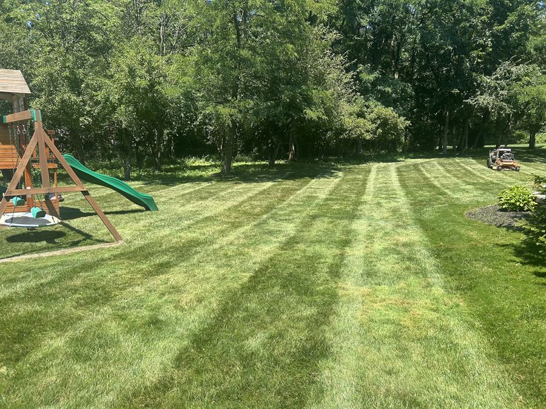
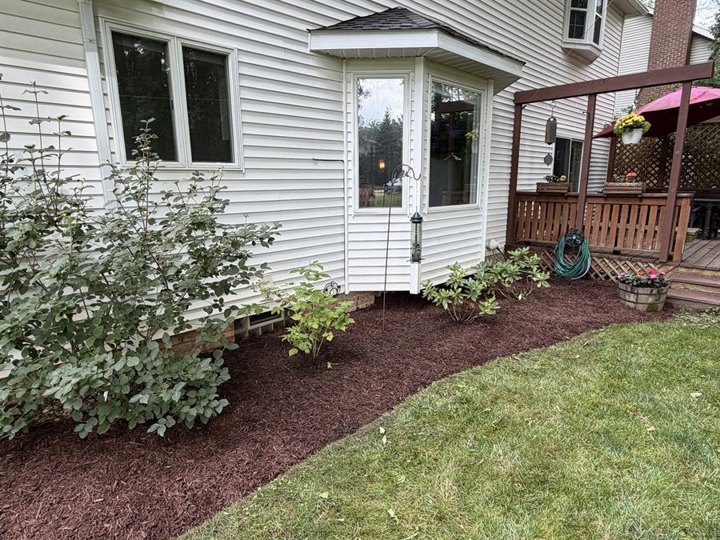

Our work, all around Richfield.


Bed cleanup. We pulled the whole overgrown bed. Fresh black mulch went down the next day.


New mulch bed. The weeds came out, we cut a clean edge, and the mulch went in.


Fall cleanup. One visit. Beds cleared, leaves gone, walk blown clean.






Want yours to look like this?
Get my yard plan